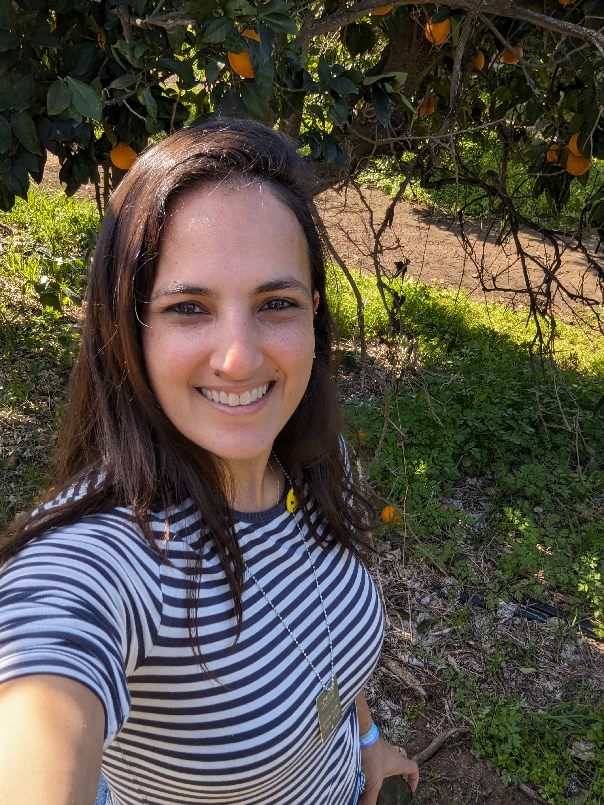

Sivan Avron

Summary
I am hardworking and bring years of experience in manual and automated QA of complex systems
Education
- 2009-2014:B.Sc. in Biomedical Engineering – Signal Processing graduate, Ben-Gurion University.
Work Experience
-
Webmaster at iinternet
2009-2010; 2013-2014
- Organized and uploaded sites content, performed maintenance and ongoing support
- Worked with WordPress and VirtualBox
-
QA Engineer at Algotec Ltd.
2014-2018
- Manual tests planning and execution of WEB applications with emphasis on UI/UX
- Reviewing requirements and design documents for establishing a comprehensive test plan
- Analyzing bugs using software debugging tools such as Chrome DevTools and Fiddler
- Managing tasks and bugs using JIRA issue & project tracking tool
- Manipulating database for testing using Oracle SQL Developer.
- Testing applications compatibility on different browser versions (IE, Firefox, Chrome and Safari) on a
variety of operating systems such as iOS and Android
- Performing verification and validation for compliance with FDA regulations
-
QA Automation Engineer at Outbrain
2018-Present
- Writing automation tests in typescript.
- Mastering testim.io for auto-recordding tests
- Providing support for AMs and other QAs
Skills
- Using Jira for bugs and tasks managements.
- Using confluence for test plan writing as well as documentation of important flows
- Friendly with Postman
- Running DB manipulations using SQL
- Familiar with git and bitbucket
A glimpse to my other passions in life
Reach out